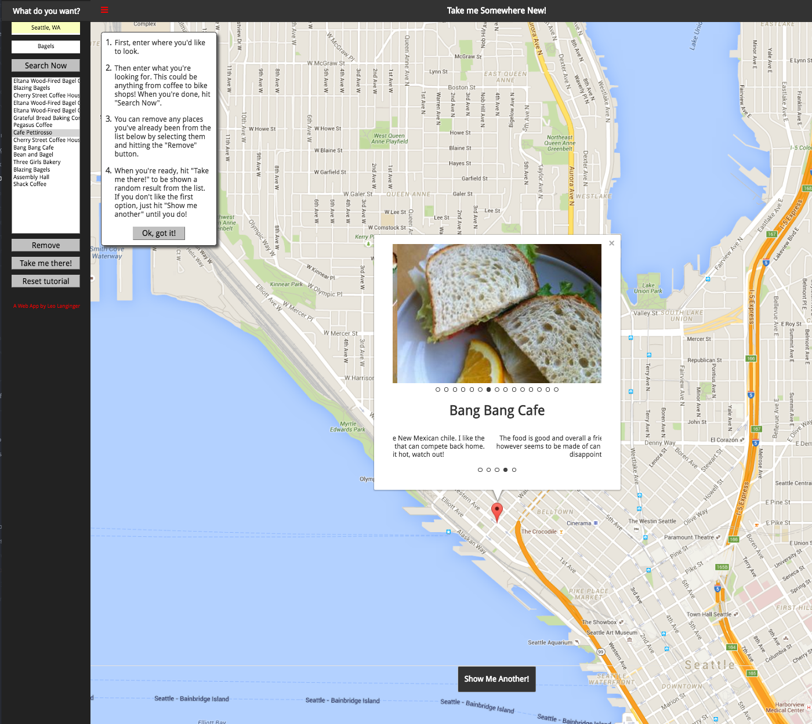

“Take Me Somewhere New” is a webapp designed to facilitate discovering new places to eat/drink/etc. Once the user inputs their location and the kind of thing they’re looking for, the app queries FourSquare’s api to give a list of venues in the area. The user can then remove from the list any places they recognize, hit the “Take me there” button and be presented with a random venue.
The purpose of this project was to learn how to use an MV* framework (Knockout.js in this case) as well as multiple 3rd party apis and AJAX requests in order to build a cohesive experience.
The app is hosted on gh-pages here:
Having learned a lot about not only performance but also more comprehensive styling best practices since making this, I intend on overhauling the look and feel of the app, whilst keeping most of the backend roughly similar. Updates will be posted!